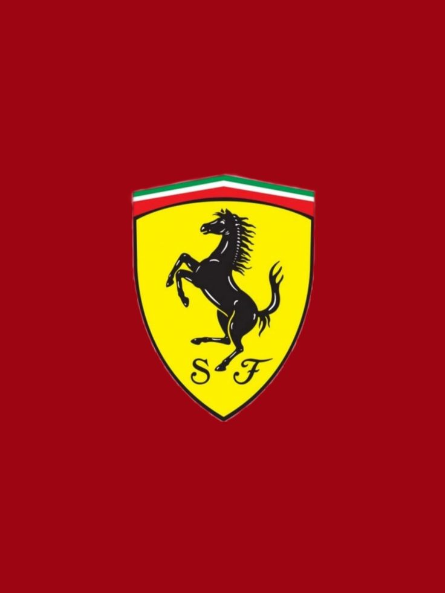
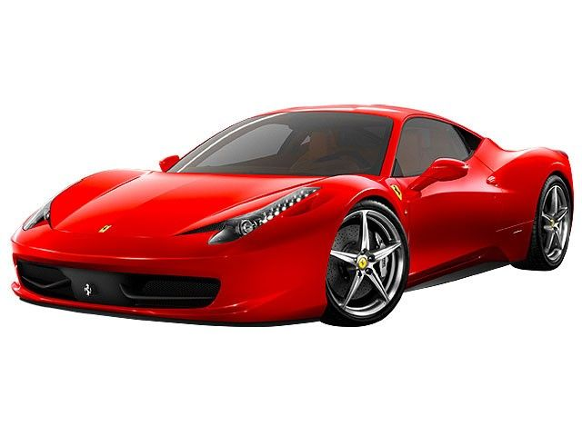
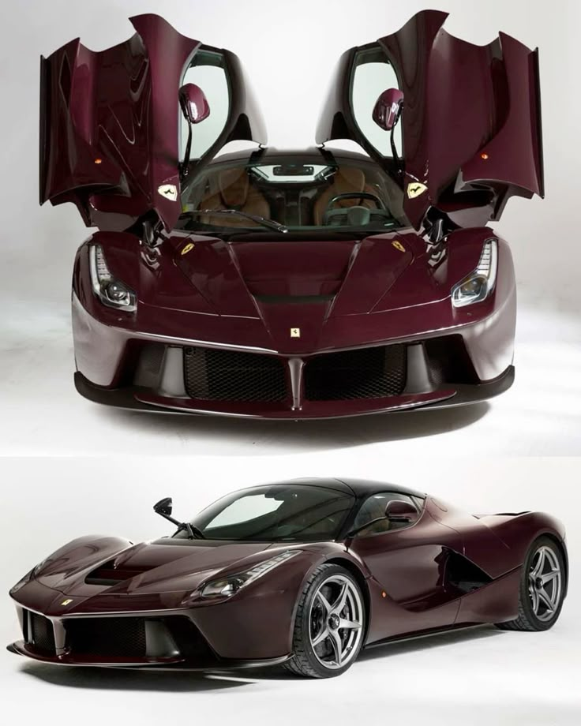

Ferrari is an iconic Italian luxury sports car manufacturer based in Maranello. Famous for its high-performance vehicles, racing heritage (especially in Formula 1), and distinctive red color (Rosso Corsa), Ferrari represents speed, innovation, and exclusivity. The prancing horse logo symbolizes Enzo’s connection to a World War I fighter pilot. Today, Ferrari remains a symbol of automotive excellence.


nzo Ferrari (1898–1988) was an Italian racing driver and entrepreneur. He founded Scuderia Ferrari in 1929 as a racing team, and later established Ferrari S.p.A. in 1947 to build road cars. Known as "Il Commendatore," Enzo was passionate about motorsport, and his leadership turned Ferrari into a legendary brand.